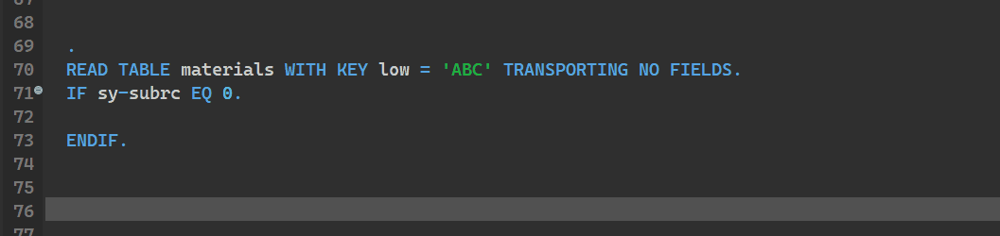

ABAP Quick Fixes - Replace READ TABLE TRANSPORTING NO FIELDS with LINE_EXISTS
If you prefer new way of checking existance of the entrie in internal table, then you can use this quick fix to replace READ TABLE TRANSPORTING NO FIELDS to LINE_EXISTS>
Works only if after READ TABLE TRANSPORTING NO FIELDS statement you can see IF SY-SUBRC EQ/= 0 OR IF SY-SUBRC NE/<> 0 is found
